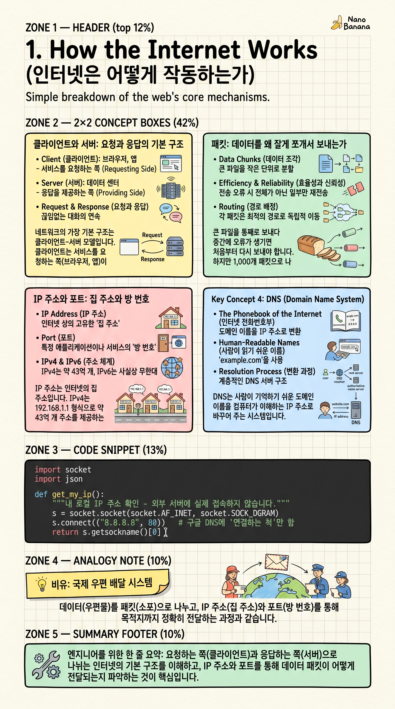

How the Internet Works

🎯 학습 목표
- 데이터가 '패킷' 단위로 나뉘어 전달되는 이유를 설명할 수 있다
- IP 주소(집 주소)와 포트 번호(방 번호)의 역할을 구분할 수 있다
- 클라이언트와 서버의 관계를 이해한다
- DNS가 도메인을 IP로 변환하는 과정을 설명할 수 있다
인터넷은 전 세계 수십억 대의 컴퓨터가 약속된 규칙(프로토콜)으로 통신하는 네트워크입니다. 삼성 폰, 애플 맥북, 리눅스 서버가 아무 문제 없이 서로 대화할 수 있는 이유는 이 공통 규칙 덕분입니다.
이 챕터는 이후 배울 모든 개념의 토대입니다. FastAPI, WebSocket, RTSP는 결국 '데이터를 어떻게 한 곳에서 다른 곳으로 보낼 것인가'라는 같은 질문의 서로 다른 해답입니다. 기초를 탄탄히 하면 고급 개념들이 자연스럽게 연결됩니다.
이 챕터를 마치면 브라우저에서 URL을 입력했을 때 실제로 무슨 일이 일어나는지, 패킷이 무엇인지, IP·포트·DNS가 각각 어떤 역할인지 명확하게 설명할 수 있습니다.
핵심 내용
클라이언트와 서버: 요청과 응답의 기본 구조
네트워크의 가장 기본 구조는 클라이언트-서버 모델입니다. 클라이언트는 서비스를 요청하는 쪽(브라우저, 앱)이고, 서버는 요청을 처리해 응답을 돌려주는 쪽(구글 서버, 여러분이 만들 FastAPI 서버)입니다.
유튜브 영상을 클릭하면 여러분의 브라우저(클라이언트)가 유튜브 서버에 '이 영상 데이터를 줘'라고 요청합니다. 서버는 영상 데이터를 조각조각 나눠 응답합니다. 클라이언트는 받은 조각들을 모아 화면에 재생합니다.
한 서버가 동시에 수백만 클라이언트 요청을 처리하기도 합니다. 이것이 가능한 이유는 5챕터에서 배울 비동기(async) 처리와 워커 패턴 덕분입니다.
패킷: 데이터를 왜 잘게 쪼개서 보내는가
큰 파일을 통째로 보내다 중간에 오류가 생기면 처음부터 다시 보내야 합니다. 하지만 1,000개 패킷으로 나누면 실패한 패킷만 재전송하면 됩니다. 효율이 훨씬 좋아집니다.
패킷마다 다른 경로로 이동할 수 있습니다. 서울에서 뉴욕으로 보낼 때 패킷 1번은 태평양 해저 케이블로, 패킷 2번은 다른 경로로 갑니다. 라우터(우체국)가 실시간으로 가장 빠른 경로를 선택합니다.
각 패킷은 헤더(출발지 IP, 목적지 IP, 패킷 번호)와 페이로드(실제 데이터)로 구성됩니다. 편지 봉투(헤더)와 편지 내용(페이로드)에 비유할 수 있습니다.
IP 주소와 포트: 집 주소와 방 번호
IP 주소는 인터넷의 집 주소입니다. IPv4는 192.168.1.1 형식으로 약 43억 개 주소를 제공하는데, 이미 부족해져 IPv6(2001:db8::1 형식)가 등장했습니다.
하나의 컴퓨터에서 여러 서비스가 동시에 실행됩니다. 포트 번호로 이들을 구분합니다. HTTP=80, HTTPS=443, FastAPI 개발 서버=8000, MySQL=3306이 대표적입니다. IP가 집 주소라면 포트는 그 집 안의 방 번호입니다.
DNS(Domain Name System)는 전화번호부입니다. 'google.com'을 입력하면 DNS 서버가 '142.250.196.46입니다'라고 알려줍니다. 사람이 기억하기 쉬운 도메인을 컴퓨터가 이해하는 IP 주소로 변환해줍니다.
💡 비유로 이해하기
IP 주소는 집의 도로명 주소이고, 포트는 그 집에 사는 특정 사람의 이름입니다. '192.168.1.100:8000'은 '서울시 강남구 테헤란로 521번지, 홍길동 수신'과 같습니다.
패킷은 긴 편지를 여러 봉투에 나눠 담은 것입니다. 각 봉투에는 출발지 주소, 도착지 주소, 몇 번째 봉투인지(순서 번호)가 적혀 있습니다. 우체국(라우터)은 주소를 보고 가장 빠른 경로로 배달합니다.
DNS는 주소록 서비스입니다. 'google.com'을 찾으면 '그 회사의 실제 주소는 142.250.196.46번지입니다'라고 알려줍니다. 이름만 알면 주소를 자동으로 찾아주는 내비게이션과 같습니다.
💻 코드 예시
Python 기본 내장 라이브러리인 socket을 이용해 내 IP 주소를 확인하고, 패킷 구조를 딕셔너리로 시뮬레이션해봅니다. socket은 모든 네트워크 통신(HTTP, WebSocket 등)의 가장 밑바닥에서 작동하는 기본 도구입니다.
import socket
import json
def get_my_ip():
"""내 로컬 IP 주소 확인 - 외부 서버에 실제 접속하지 않습니다."""
s = socket.socket(socket.AF_INET, socket.SOCK_DGRAM)
s.connect(("8.8.8.8", 80)) # 구글 DNS에 '연결하는 척'만 함
ip = s.getsockname()[0]
s.close()
return ip
def make_packet(data: str, src_ip: str, dst_ip: str,
src_port: int, dst_port: int, seq: int) -> dict:
"""패킷 구조를 딕셔너리로 표현합니다."""
return {
"header": {
"src": f"{src_ip}:{src_port}",
"dst": f"{dst_ip}:{dst_port}",
"seq": seq, # 패킷 순서 번호
"length": len(data.encode("utf-8")) # 페이로드 크기(바이트)
},
"payload": data
}
# ── 실행 ──────────────────────────────────────────────────
my_ip = get_my_ip()
print(f"내 IP: {my_ip}\n")
# 긴 메시지를 패킷으로 분할하는 시뮬레이션
message = "안녕! 이것은 네트워크 패킷 분할 시뮬레이션입니다."
chunk_size = 8 # 실제 네트워크는 보통 1460바이트
chunks = [message[i:i+chunk_size] for i in range(0, len(message), chunk_size)]
print(f"메시지를 {len(chunks)}개 패킷으로 분할:")
for i, chunk in enumerate(chunks):
pkt = make_packet(chunk, my_ip, "93.184.216.34", 54321, 80, i)
print(json.dumps(pkt, ensure_ascii=False))socket.SOCK_DGRAM은 UDP 방식 소켓입니다. connect()를 호출해도 실제 패킷을 보내지 않지만, 운영체제가 목적지로 나갈 네트워크 인터페이스를 결정하여 로컬 IP를 알 수 있습니다. 하단의 패킷 분할 시뮬레이션은 실제 TCP/IP에서 MTU(최대 전송 단위) 때문에 일어나는 일을 단순화한 것입니다.
🏭 현업에서의 평가
✅ 시니어가 보는 것
- IP 주소와 포트의 역할을 클라이언트-서버 맥락에서 정확히 설명
- DNS 조회 과정 이해: 브라우저 → DNS 서버 → IP 반환 → TCP 연결
- 공인 IP vs 사설 IP, NAT의 동작 개념 이해
⚠️ 레드 플래그
- 포트를 프로토콜과 혼동 (예: 'HTTP는 포트다'라고 설명)
- DNS 없이 매번 IP를 직접 입력해야 한다고 생각하거나 DNS 자체를 모름
🎤 예상 인터뷰 질문
- 브라우저에 'google.com'을 입력했을 때 화면이 나타나기까지 어떤 일이 순서대로 일어나나요?
- 포트 번호가 없다면 어떤 문제가 생기나요?
✨ 핵심 요약
클라이언트-서버 모델
요청하는 쪽(클라이언트)과 응답하는 쪽(서버)으로 나뉘는 인터넷의 기본 구조
패킷 교환
데이터를 잘게 쪼개 전송 → 재전송 효율화, 다중 경로 활용 가능
IP 주소 = 집 주소
공인 IP(인터넷에서 유일)와 사설 IP(내부망용, 192.168.x.x) 구분
포트 = 방 번호
같은 IP에서 여러 서비스 구분. HTTP=80, HTTPS=443, FastAPI=8000
DNS = 전화번호부
도메인(google.com)을 IP(142.250.x.x)로 변환해주는 서비스
패킷 구조
헤더(출발지, 목적지, 순서번호) + 페이로드(실제 데이터)